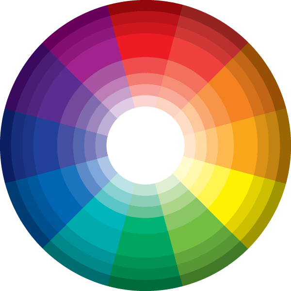

A Compass extension for building color schemes in Sass.
Built on Compass and Sass, Colorkit provides a sensible default color library along additional functions and mixins that make generating harmonious color schemes a breeze.
View Source on GitHub View Gem on RubyGems
$ gem install colorkit
$ compass create [your_project_name] -r colorkit --using colorkit
Add the following to the top of your config.rb file:
require 'colorkit'
Next, include the colorkit partial within your main Sass file:
@import 'colorkit';